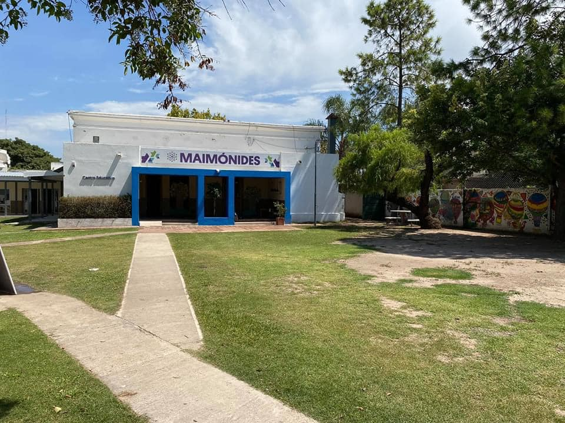

Plaza San Martin
Colegio Maimonides

Estadio Kempes
Valle Escondido
Mujer Urbana
Ciudad de las Artes


Must visit in cordoba
Córdoba:is a city in central Argentina, in the foothills of the Sierras Chicas
on the Suquía River, about 700 km (435 mi) northwest of the Buenos Aires.
It is the capital of Córdoba Province and the second most populous city in Argentina after Buenos Aires,
with about 1.3 million inhabitants according to the 2010 census.
It was founded on 6 July 1573 by Jerónimo Luis de Cabrera,
who named it after Córdoba, Spain. It was one of the first Spanish colonial capitals of the region that is now Argentina
(the oldest city is Santiago del Estero, founded in 1553). The National University of Córdoba is the oldest university of the country
and the seventh to be inaugurated in Spanish America.
It was founded in 1613 by the Jesuit Order. Because of this,
Córdoba earned the nickname La Docta ("the learned").